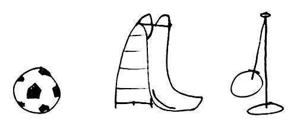

A quick Google search of coding programs for kids results in websites with the following advertisements:
“Our mission is to inspire students around the country to become future engineers and inventors”
“Focus on the big picture! Jumpstart your kid's career & ensure future success”
“Exposing students earlier to programming increases their chance by 30% to continue in this field later on in their studies, and to get one of the most amazing jobs that will be available.”
There's a funny pattern here. These camps are being approached from the idea that by learning programming, kids can be set on the path to becoming future techies who will one day fill up programming positions at tech companies.
In my opinion, this approach is dead wrong. Kids are not future software developers in the same way that they are not future lawyers, financial analysts, or museum curators. This is because kids are not taught new skills so that those skills may develop into successful careers. The actual importance of these skills lies in their ability to spark curiosity and make kids into well-rounded individuals. This is one reason kids are encouraged to pick up playing musical instruments or to play sports. While kicking a soccer ball can turn into a career for a select few, most kids are made to do it simply to learn physical coordination, get healthy exercise, and develop teamwork skills.
So why not look at coding the same way? There is, of course, much more to programming than the marketable skills it will put on little Timmy’s resume. Programming teaches kids to think in a logically under the constrained sets of rules that a computer necessitates. Computer instructions are unlike any other instructions that children face—in order to program, they have to tell a computer exactly what to do, and any fault in their logic will cause an error. This has a number of benefits for learning and development. First, it fosters critical, rigid thinking on the child’s part. Programming leaves little room for mistakes, causing kids to focus and think deeply to get their programs to work. They also learn a great deal of trial and error, as they will inevitably run into bugs and must experiment to solve the issue. There’s also the math skills, computational logic, and abstract thinking that develops as a child learns to code.
All of this is to say that understanding code is good for a child’s brain. But if programming were just useful for the reasons just mentioned, you might as well force kids to solve sudoku puzzles and hope for the same result. The real value of programming is that, chances are, the student will be genuinely interested in what they are learning, so long as they feel like they are being given creative freedom. Kids love to create, especially when making animations and games reminiscent of the animations and games they consume every day.
Most every curriculum involves kids programming games. This is a good first step, but just isn’t enough to actually be successful in educating kids about programming. A survey of most learning options will show a study path centered around game development, but one that is heavily supplemented with rules, definitions, and concepts—in other words, things kids care nothing about. When the programming teacher tries to ensure his students understands algorithms and data types, they have turned programming into another mind-numbing school subject. Imagine if an elementary art teacher didn’t teach finger painting or papier-mâché, but instead drilled students on the tenants of the postmodern art movement and the concept of perspective. Just like when they learn programming concepts with big confusing words, they will either become frustrated or they just won’t care.
Making games is a good start, but if is overly academic and structured it will fail to spark the student's interest. Kids must not be given a programming classroom, but a playground. Research shows that a playground-style of learning has effective and positive effects on the brain . It might be hard to imagine programming instruction that isn’t centered around textbooks—how will they ever learn while loops if the syntax is never presented to them? This is where intuitive platforms like Scratch come very much in handy. Scratch is designed in a way where a child could potentially understand concepts just by playing around in the drag-and-drop editor. When a child learns an if-statement by using it to make a sprite move across the screen, it is bound to stick much more than if they were to read it in a book.
In the realm of code education, why not just let kids be kids? They are already masters of learning and experimentation, they only need some proper guidance so that they do it the right way. This means giving them freedom and sparking their interest, and fully leaning into the creative aspect of creating programs, instead of showing them something that they would probably want to create and telling them step-by-step exactly how to do it. If this subject is to be taught to kids effectively, it must be taught as if they were creating pottery in ceramics class. Could they take the skills from that class and use it to become professional potters? It’s certainly a possibility, but it would be ridiculous for that to be the first thing on the teacher's mind.
Kids Are Not Future Developers
By Alexander B on January 20, 2021
